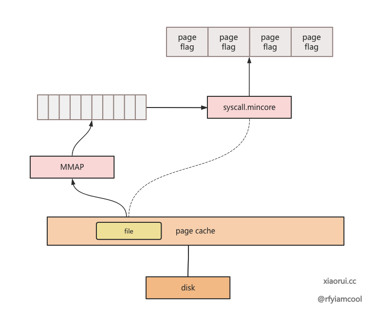
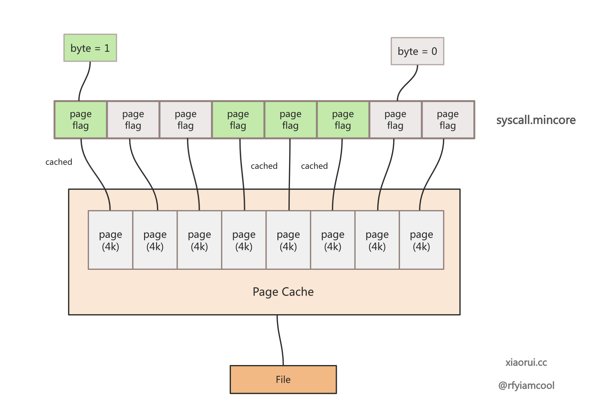

pgcacher
简介
pgcacher可以用来获取当前系统中pagecache相关信息。pgclear打印的信息 格式大致如下:
1
2
3
4
5
6
7
8
9
# sudo pgcacher -pid=933 -worker=5 -limit 2
+---------------------------------+----------------+-------------+----------------+-------------+---------+
| Name | Size │ Pages │ Cached Size │ Cached Pages│ Percent │
|---------------------------------+----------------+-------------+----------------+-------------+---------|
| /usr/lib64/libc.so.6 | 2.131M | 546 | 2.131M | 546 | 100.000 |
| /usr/lib64/libsystemd.so.0.36.0 | 939.391K | 235 | 939.391K | 235 | 100.000 |
|---------------------------------+----------------+-------------+----------------+-------------+---------|
│ Sum │ 3.048M │ 781 │ 3.048M │ 781 │ 100.000 │
+---------------------------------+----------------+-------------+----------------+-------------+---------+
- name: 文件名称
- size: 文件大小
- page
- cached size: pagecache 占用的大小
- cached pages: pagecache 占用的 page 数量
- percent: cached size / size
pgcacher大致的原理:
从系统中的/proc/{pid}/maps和/proc/{pid}/fd获取进程所使用的文件 路径, 然后将文件mmap到当前进程，通过syscall.mincore获取该文件 block在内存中有pagecache。

这里面只画了mmap一条线，没有画FD的，不知道是作者漏画了，还是别有 深意
下面是syscall.mincore的原理图，我们再另一篇文章中展示

常用命令
- 查看某个进程 pgcache 占用情况
1 2 3 4 5 6 7 8 9 10 11
wang@fedora ~ sudo pgcacher -pid=1 -worker 5 -limit 3 2024/10/10 13:03:02 skipping "/sys/fs/cgroup": file is a directory +-------------------------------------------------------+----------------+-------------+----------------+-------------+---------+ | Name | Size │ Pages │ Cached Size │ Cached Pages│ Percent │ |-------------------------------------------------------+----------------+-------------+----------------+-------------+---------| | /usr/lib64/libcrypto.so.3.0.9 | 4.237M | 1085 | 4.237M | 1085 | 100.000 | | /usr/lib64/systemd/libsystemd-shared-253.12-1.fc38.so | 3.651M | 935 | 3.651M | 935 | 100.000 | | /usr/lib64/libc.so.6 | 2.131M | 546 | 2.131M | 546 | 100.000 | |-------------------------------------------------------+----------------+-------------+----------------+-------------+---------| │ Sum │ 10.019M │ 2566 │ 10.019M │ 2566 │ 100.000 │ +-------------------------------------------------------+----------------+-------------+----------------+-------------+---------+
- pid: 指定进程号
- worker: 指定多线程数量，加快处理速度
- limit: 限制打印条目
- 查看某些文件的pgcache占用
1 2 3 4 5 6 7 8 9 10
wang@fedora ~/workspace/vm/centos-qcow2 pgcacher cgdb.sh test.sh dange.xml +-----------+----------------+-------------+----------------+-------------+---------+ | Name | Size │ Pages │ Cached Size │ Cached Pages│ Percent │ |-----------+----------------+-------------+----------------+-------------+---------| | test.sh | 4.166K | 2 | 4.166K | 2 | 100.000 | | cgdb.sh | 1.471K | 1 | 1.471K | 1 | 100.000 | | dange.xml | 6.869K | 2 | 0B | 0 | 0.000 | |-----------+----------------+-------------+----------------+-------------+---------| │ Sum │ 12.506K │ 5 │ 5.637K │ 3 │ 60.000 │ +-----------+----------------+-------------+----------------+-------------+---------+
本次测试，只cat了
test.sh,cgdb.sh没有catdange.xml - 查看某个目录的文件pgcache占用（递归）
1 2 3 4 5 6 7 8 9
wang@fedora ~ pgcacher --depth 4 a +-----------+----------------+-------------+----------------+-------------+---------+ | Name | Size │ Pages │ Cached Size │ Cached Pages│ Percent │ |-----------+----------------+-------------+----------------+-------------+---------| | a/b/a.md | 16B | 1 | 16B | 1 | 100.000 | | a/b/a.txt | 69B | 1 | 0B | 0 | 0.000 | |-----------+----------------+-------------+----------------+-------------+---------| │ Sum │ 85B │ 2 │ 16B │ 1 │ 50.000 │ +-----------+----------------+-------------+----------------+-------------+---------+ - 查看系统中所有进程占用的 pgcache 情况
1 2 3 4 5 6 7 8 9 10
wang@fedora ~ pgcacher -top -limit 3; +--------------------------------+----------------+-------------+----------------+-------------+---------+ | Name | Size │ Pages │ Cached Size │ Cached Pages│ Percent │ |--------------------------------+----------------+-------------+----------------+-------------+---------| | /usr/lib/locale/locale-archive | 213.972M | 54777 | 213.972M | 54777 | 100.000 | | /usr/lib64/firefox/libxul.so | 125.989M | 32254 | 125.989M | 32254 | 100.000 | | /usr/lib64/libLLVM-16.so | 117.789M | 30154 | 117.789M | 30154 | 100.000 | |--------------------------------+----------------+-------------+----------------+-------------+---------| │ Sum │ 457.750M │ 117185 │ 457.750M │ 117185 │ 100.000 │ +--------------------------------+----------------+-------------+----------------+-------------+---------+
该命令只能查询当前系统中，进程打开的文件，以及mmap的文件占用。并不是系统中 所有文件的pgcache占用统计
1 2
-top: scan the open files of all processes, show the top few files that occupy the most memory space in the page cache, default: false
pgcacher 执行流程
pgcacher流程主要分为以下几个步骤
- 汇总所有要统计的文件
- 对这些文件进行
mmap, 然后调用mincore, 获取该文件在内存中的有哪些block申请了pgcache - 统计打印
我们先看下如何汇总所有要统计的文件
汇总所有统计的文件
主要分为种方式:
- 从进程角度出发, 统计某个或者某些进程使用的文件, 而从进程角度出发主要又分两种方式:
- -pid : 统计某个进程
- -top: 统计所有进程
- 从文件系统角度出发, 统计某些文件，或者某个目录下的所有文件
从进程角度出发
该方式主要分为两种, -pid获取某一个进程。-top获取所有进程， 我们分别来看下:
- -pid
1 2 3 4 5 6 7 8 9 10
main => pg.appendProcessFiles(pid) => pg.getProcessFiles(pid) => pg.getProcessFdFiles(pid) => loop /proc/${pid}/fd # 获取所有打开fd的 文件路径 => pg.getProcessMaps(pid) # 获取mmap 的文件路径 => loop /proc/${pid}/maps => AREADY GET THIS PROCESS ALL FILEs => pg.getPageCacheStats() # 获取 files pagecache 情况 => pg.output() # 以一定格式输出
- -top
1 2 3 4 5 6 7 8
main => pg.handleTop() => psutils.Processes() => processes() # return all process => loop all process => pg.getProcessFiles(process.Pid()) => pg.getPageCacheStats() => pg.output()
两者流程差不多，-top就是先获取所有进程，然后收集每个进程使用的文件
从文件角度出发
从文件角度出发，这个比较简单，从文件系统tree，或者参数中的文件列表就可以 只要所需要统计的文件的路径，流程不再展开
统计文件的pgcache占用情况
该流程主要在pg.getPageCacheStats()流程
1
2
3
4
5
6
7
8
9
10
pg.getPageCacheStats()
=> pcstats.GetPcStatus()
=> GetFileMincore()
=> unix.Mmap() # 先mmap文件，目的是为了下面调用sys_mincore
=> unix.Syscall(unix.SYS_MINCORE, ...) # 调用mincore
# 根据mincore的返回，获取各种
=> Get Cached
=> Get Pages
=> Get Uncached
=> Calculate Percent
该流程也比较简单，对文件依次，进行sys_mmap(), 然后对mmap()的地址空间 做sys_mincore(), 查看这些地址所在的page, 是否存在其pgcache
虽然此时 VA->PA 没有建立起映射， 但是
sys_mincore流程，仍然可以 通过address_space->i_pages获取到该地址空间是否有pgcache，我们在另外 一篇文章中，看下sys_mincore()原理
pgcacher遗漏 pgcache – blockdev
目前，pgcacher 发现对blockdev 有忽略, 例如执行下面命令:
简单测试
- 从文件角度查看
1 2 3 4 5 6 7 8
# sudo ./pgcacher /dev/nvme0n1 +--------------+----------------+-------------+----------------+-------------+---------+ | Name | Size │ Pages │ Cached Size │ Cached Pages│ Percent │ |--------------+----------------+-------------+----------------+-------------+---------| | /dev/nvme0n1 | 0B | 0 | 0B | 0 | 0.000 | |--------------+----------------+-------------+----------------+-------------+---------| │ Sum │ 0B │ 0 │ 0B │ 0 │ NaN │ +--------------+----------------+-------------+----------------+-------------+---------+
- 从进程调度
1 2 3 4 5 6 7 8 9 10 11
# sudo xxd /dev/nvme0n1|less # sudo ~/workspace/tools/mm/pgcacher_org/pgcacher -pid $(ps aux |grep xxd |grep -v -E 'grep|sudo' |awk '{print $2}') +---------------------------------+----------------+-------------+----------------+-------------+---------+ | Name | Size │ Pages │ Cached Size │ Cached Pages│ Percent │ |---------------------------------+----------------+-------------+----------------+-------------+---------| | /usr/lib64/libc.so.6 | 2.131M | 546 | 2.131M | 546 | 100.000 | | /usr/lib64/ld-linux-x86-64.so.2 | 829.688K | 208 | 829.688K | 208 | 100.000 | | /usr/bin/xxd | 23.758K | 6 | 23.758K | 6 | 100.000 | |---------------------------------+----------------+-------------+----------------+-------------+---------| │ Sum │ 2.964M │ 760 │ 2.964M │ 760 │ 100.000 │ +---------------------------------+----------------+-------------+----------------+-------------+---------+
相关代码
从进程角度出发, 在获取进程所使用的文件列表时(getProcessFiles()), 忽略了/dev下的所有文件.
1
2
3
4
5
6
7
8
9
10
11
func (pg *pgcacher) getProcessFdFiles(pid int) []string {
...
readlink := func(file fs.DirEntry) {
...
if strings.HasPrefix(target, "/dev") { // ignore devices
return
}
...
}
...
}
个人建议，可以增加选择统计下
blockdevfile.
从文件角度出发，似乎也有问题:
1
2
3
4
5
6
7
8
9
10
11
func GetPcStatus(fname string, filter func(f *os.File) error) (PcStatus, error) {
...
f, err := os.Open(fname)
...
finfo, err := f.Stat()
...
pcs.Size = finfo.Size()
...
mincore, err := GetFileMincore(f, finfo.Size())
...
}
通过os.Stat()并不能统计到block_dev文件大小，导致finfo.Size()输出为0,
个人建议, 对于block_dev, 可以使用下面的接口获取文件大小
个人修改
个人针对上面的问题进行了修改，目前的方案还需要进一步改进:
目前支持statblockdev参数，添加该参数，可以对blockdev设备进行统计。 但是个人认为该方法不太好，最好总能打印出blockdev， 但是选择性统计， blockdev设备的pgcache情况.(因为这个操作比较耗时)
git 链接 [3]
参考链接
[1]. [GITHUB PROTECT]: pgcacher